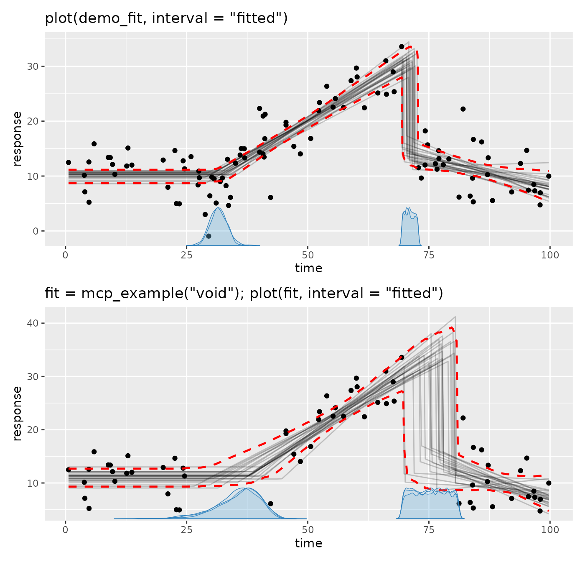
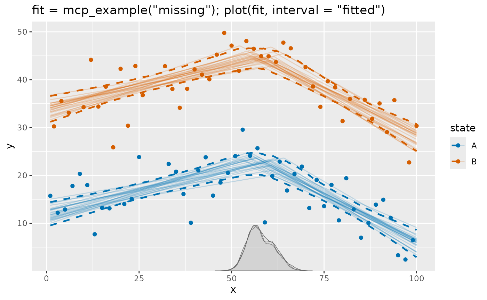
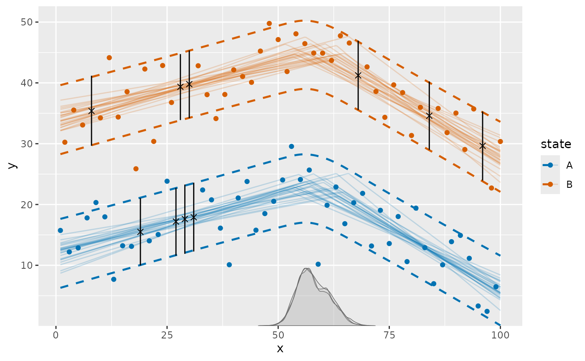
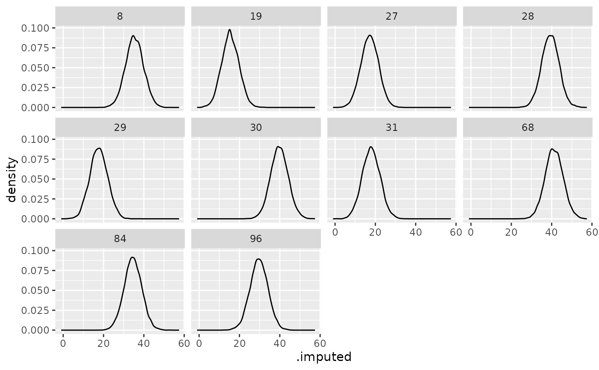

mcp allows missing values (NA) in the
response. This article covers two consequences of that:
- Change points in voids: Change points can be inferred in regions with no observed responses.
-
Imputing missing responses:
imputed()gives you the missing responses sampled jointly with the model parameters. Use it to inspect a gap or complete your data.
Inferring change points in voids
Sometimes the interest is not in recovering individual missing
responses, but in how gaps in the data affect inference about the change
points. To demonstrate this, mcp_example("void") takes the
data from mcp_example("demo") and sets the responses near
both change points to NA (25 < time < 42
and 70 < time < 80). The top panel shows the fit to
the full data and the bottom panel the fit with the voids:
fit_void = mcp_example("void", sample = "both")## NA values detected in 'response'. JAGS will treat them as latent responses and impute them during sampling.
The message confirms that mcp detected the missing
responses.
Notice that mcp can infer change points in regions with
no observed data. The first change point joins a plateau to a slope. Its
location in the void is mostly informed by extrapolating the two
segments until they meet, and the uncertainty is greater than in the
full data because fewer data inform these trends. In principle, it could
be known to great precision if the segments’ trends were very well
defined.
The second change point is different because segment 3 is disjoined from segment 2. There is nothing in the void that tells where the jump happened, so the change point posterior is roughly uniform across the void. This is true for any gap between data: the narrow gap between two neighboring data points (top panel) also yields a uniform-like posterior, just on a much smaller range.
We can quantify how much of each change point posterior is within its
void using hypothesis(). Because we sampled the prior too
(sample = "both"), it also returns a Bayes factor
(BF) for each interval, i.e., how much the data shifted the
odds of the change point being in the void:
hypothesis(fit_void, c(
"cp_1 > 25 & cp_1 < 42",
"cp_2 > 70 & cp_2 < 80"
))## # A tibble: 2 × 7
## hypothesis mean sd lower upper prob BF
## <chr> <dbl> <dbl> <dbl> <dbl> <dbl> <dbl>
## 1 cp_1 > 25 & cp_1 < 42 NA NA NA NA 0.933 45.1
## 2 cp_2 > 70 & cp_2 < 80 NA NA NA NA 0.848 30.2Imputing missing responses
The built-in example has a change in slope, a difference between two
states, and several missing responses. Use imputed() to see
the mean and an 80% interval for each missing response.
.row gives its row number in fit$data.
# Fits model and plots it. See code in fit$example_code.
fit = mcp_example("missing")## NA values detected in 'y'. JAGS will treat them as latent responses and impute them during sampling.
# Get imputations
imputations = imputed(fit, width = 0.8)
imputations## # A tibble: 10 × 8
## y x state .row .mean .sd .lower .upper
## <dbl> <int> <fct> <int> <dbl> <dbl> <dbl> <dbl>
## 1 NA 8 B 8 35.4 4.45 29.7 41.2
## 2 NA 19 A 19 15.5 4.30 9.99 21.0
## 3 NA 27 A 27 17.2 4.34 11.6 22.7
## 4 NA 28 B 28 39.4 4.30 33.9 44.7
## 5 NA 29 A 29 17.6 4.40 11.9 23.3
## 6 NA 30 B 30 39.8 4.39 34.2 45.3
## 7 NA 31 A 31 17.9 4.43 12.3 23.6
## 8 NA 68 B 68 41.2 4.45 35.6 46.9
## 9 NA 84 B 84 34.6 4.37 29.0 40.2
## 10 NA 96 B 96 29.6 4.44 23.9 35.3
Use fitted() for the expected response at each row and
predict() for a fresh response. Both return all rows, so
you can use filter(is.na(y)) to inspect the missing
responses. For this model, predictions and imputations at the gaps have
the same distribution. In a time
series, they can differ, and imputed() use more
available information.
Visualizing imputations
Add the imputation summaries to plot() with
geom_linerange() for the interval and an × for
the mean.
# Start with mcp plot with prediction interval
plot(fit, color_by = "state", interval = "predict", width = 0.8) +
# Add imputation interval
geom_linerange(
data = imputations,
aes(x = x, ymin = .lower, ymax = .upper),
inherit.aes = FALSE,
color = "black"
) +
# Add "x" at posterior mean
geom_point(
data = imputations,
aes(x = x, y = .mean),
inherit.aes = FALSE,
shape = 4, # an "x"
size = 2
)
Use summary = FALSE to plot the distribution of each
missing response from its draws, which is richer than just the interval
plotted above.
missing_draws = imputed(fit, summary = FALSE)
ggplot(missing_draws, aes(x = .imputed)) +
geom_density() +
facet_wrap(~x)
Probabilities for a missing response
To estimate the probability that the missing response at row 19 exceeded 20, calculate the fraction of its draws above 20. Similarly for other probabilities:
missing_draws |>
filter(.row == 19) |>
summarise(
p_greater = mean(.imputed > 20),
p_lower = mean(.imputed < 10),
p_between = mean(.imputed > 10 & .imputed < 20)
)## # A tibble: 1 × 3
## p_greater p_lower p_between
## <dbl> <dbl> <dbl>
## 1 0.147 0.100 0.752Completing a dataset (multiple imputation)
With complete = TRUE, .imputed contains the
observed responses as well as the imputed ones. Each .draw
gives one joint completion of the data. For multiple imputation, select
a few draws and make one dataset per draw.
completed = imputed(fit, complete = TRUE, summary = FALSE, ndraws = 20) |>
mutate(y = .imputed)
datasets = split(select(completed, all_of(names(fit$data))), completed$.draw)
# Show one completed dataset
datasets[1]## $`264`
## # A tibble: 100 × 3
## y x state
## <dbl> <int> <fct>
## 1 15.7 1 A
## 2 30.2 2 B
## 3 12.2 3 A
## 4 35.5 4 B
## 5 12.9 5 A
## 6 33.1 6 B
## 7 17.8 7 A
## 8 29.0 8 B
## 9 20.3 9 A
## 10 34.2 10 B
## # ℹ 90 more rowsImputations in time series
Use imputed() to fill a gap in an AR/MA series. The
observed responses on both sides can inform the imputation. For example,
in a Gaussian AR(1) model with mean 0 and coefficient 0.8, the middle
response in c(0, NA, 10) has an imputed mean of about 4.9.
The fresh prediction at that row has mean 0, based on the preceding
response.
Default predict() uses the history up to each row to
generate a fresh response. Earlier imputations in that history can
already contain information from later observations. Use
predict(fit, arma = "replicate") to generate a fresh series
recursively. See the time-series
article for examples.
Supported models and limitations
Supported model features
Missing responses work with the usual mcp model
features. For example, you can:
- Include continuous and categorical predictors so imputations follow observed covariate information.
- Use group-level effects so sparsely observed groups borrow information from the population and their available observations.
-
Model changing residual standard
deviation with
sigma()so imputation uncertainty can vary over the predictor range. - Use binomial, Bernoulli,
Poisson, or negative-binomial responses. The imputation draws are
discrete. Use
imputed(fit, rate = TRUE)for binomial proportions.
However, predictors required by the model must themselves be
observed. mcp currently imputes missing responses, not
missing predictor values, and it does not model the process that caused
responses to be missing. As with ordinary regression using incomplete
outcomes, interpretation relies on the missing responses being
reasonably explained by the observed predictors and model structure.
Model evaluation and time series
log_lik(), loo(), and waic()
score observed responses. In AR/MA models, these functions are
unavailable when a missing response enters the history of a later
observed response. Scoring that observation would require integrating
over the missing history.
The time-series article discusses
this. Use predict(fit, arma = "replicate") or
posterior_predict(fit, arma = "replicate") to generate
fresh replicated series recursively.
Predictions for new data
Use predict() with newdata to generate
responses at new predictor values. For the example without AR/MA terms,
supply the predictor values directly.
newdata = data.frame(
x = c(20, 80),
state = factor(c("A", "B"), levels = levels(fit$data$state))
)
predict(fit, newdata = newdata, width = 0.8)## # A tibble: 2 × 7
## x state .row .mean .sd .lower .upper
## <dbl> <fct> <int> <dbl> <dbl> <dbl> <dbl>
## 1 20 A 1 15.7 4.35 10.2 21.3
## 2 80 B 2 36.2 4.36 30.7 41.8